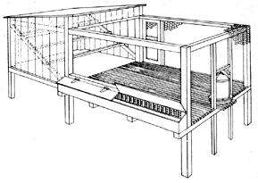

This sun porch can be built to accommodate any number of turkeys. Both feeder and waterer are easily filled from outside the pen; the slat floor facilitates cleaning. A small door is placed where turkeys can be readily caught with a leg wire.